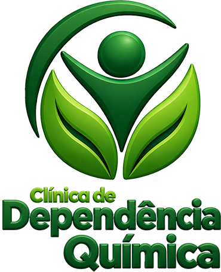

Acolhimento especializado
Atendimento realizado de forma humanizada, com foco no bem-estar e no suporte integral.
Atendimento humanizado e acompanhamento especializado

Acolhimento e orientação para quem busca ajuda com dependência química e alcoolismo. Converse com nossa equipe e conheça possibilidades de cuidado para você ou sua família.
Sobre
Oferecemos acolhimento e orientação para pessoas e famílias que buscam apoio em situações relacionadas à dependência química e ao alcoolismo. Nosso trabalho começa com uma escuta atenta para compreender cada história e apresentar possibilidades de cuidado.
Nossa atuação é baseada em princípios de ética, respeito, responsabilidade e humanização, sempre valorizando a individualidade de cada pessoa atendida.
Trabalhamos em parceria com unidades especializadas e profissionais comprometidos com um atendimento responsável e seguro.
Acreditamos que toda pessoa merece ser acolhida com respeito, empatia e sem julgamentos. Valorizamos a história de cada indivíduo, preservando sua dignidade em todas as etapas do tratamento.
Atuamos com honestidade, responsabilidade e clareza em nossas ações. Mantemos uma comunicação transparente com pacientes, familiares e parceiros, fortalecendo relações de confiança.
Contribuímos para a construção de uma sociedade mais saudável por meio da prevenção, conscientização e promoção da recuperação, incentivando a reintegração social e familiar.
Oferecemos um atendimento acolhedor, individualizado e centrado nas necessidades de cada pessoa, promovendo cuidado integral, respeito e valorização da vida.
Entendemos que a recuperação envolve toda a família. Por isso, incentivamos sua participação durante o tratamento, oferecendo orientação, apoio e acompanhamento contínuo.
Buscamos oferecer um ambiente seguro, organizado e acolhedor, aliado a uma equipe qualificada e comprometida com a qualidade do atendimento e a transformação de vidas.
Convênios
Consulte nossa equipe para verificar cobertura, disponibilidade e condições de atendimento.
Serviços
Encontre orientação sobre acolhimento, unidades parceiras e possibilidades de acompanhamento para dependência química e alcoolismo, com respeito às necessidades de cada pessoa e de sua família.
Atendimento realizado de forma humanizada, com foco no bem-estar e no suporte integral.
Acompanhamento e informações para familiares que necessitam de apoio e esclarecimentos.
Planejamento personalizado, considerando as necessidades específicas de cada caso.
Acompanhamento responsável com foco na qualidade de vida e no fortalecimento dos vínculos familiares.
Equipe disponível para orientar e prestar informações sempre que necessário.
Rede de apoio
Trabalhamos em parceria com unidades especializadas e profissionais comprometidos com um atendimento responsável e seguro.
Disponibilidade
Além das unidades listadas, nossa equipe pode verificar opções conforme o perfil do caso, urgência e disponibilidade no momento do atendimento.
9 unidades encontradas
Nenhuma unidade encontrada com os filtros selecionados.
Converse com nossa equipe para organizar as informações do caso e entender qual encaminhamento faz mais sentido.
Compromisso
Promover cuidado, acolhimento e acompanhamento especializado, contribuindo para a reconstrução de vidas e para o fortalecimento da esperança.
Acolhimento com respeito, escuta e atenção à individualidade de cada pessoa.
Suporte para fortalecer relações, orientar familiares e ampliar a rede de apoio.
Compromisso contínuo com qualidade de vida, esperança e novos caminhos.
Nossos diferenciais
Proporcionamos um ambiente seguro e acolhedor, com suporte contínuo para pessoas e famílias que desejam reconstruir suas histórias.
Entre em contatoAcompanhamento
Nosso compromisso é promover qualidade de vida, fortalecimento dos vínculos familiares e suporte contínuo para aqueles que desejam reconstruir suas histórias.
Em casos de risco à vida, surto grave ou violência, procure imediatamente os serviços de urgência da sua cidade.
Diferenciais
Acolhimento cuidadoso desde o primeiro contato, com escuta responsável, orientação transparente e respeito ao momento emocional de cada família.
Cada encaminhamento considera histórico, necessidades, perfil da unidade e contexto familiar para construir um percurso de cuidado mais coerente.
O atendimento conta com suporte de profissionais e unidades especializadas, integrando acolhimento, rotina terapêutica e acompanhamento responsável.
As conversas e orientações são conduzidas com discrição, transparência e responsabilidade, preservando dados, histórias e decisões familiares.
A família recebe orientação para compreender o tratamento, lidar com dúvidas e participar de forma mais segura no processo de recuperação.
Contato responsável
Converse com nossa equipe sobre suas dúvidas, conheça as unidades parceiras e receba orientação para dar o próximo passo na busca por cuidado.
Quero orientação para buscar ajudaPerguntas frequentes
Sim. Nossa atuação é baseada em acolhimento, respeito, ética e atenção individualizada.
Sim. A equipe fica disponível para orientar e prestar informações sempre que necessário.
Sim. Oferecemos acompanhamento e informações para familiares que necessitam de apoio e esclarecimentos.
Sim. O planejamento considera as necessidades específicas de cada pessoa e família.
Sim. O atendimento é conduzido com ética, sigilo e respeito à dignidade humana.
Sim. Trabalhamos em parceria com unidades especializadas e profissionais comprometidos com atendimento responsável e seguro.
Não. Em casos de risco à vida, surto grave ou violência, procure imediatamente os serviços de urgência da sua cidade.
Contato
Seja para você ou para alguém da sua família, nossa equipe pode esclarecer dúvidas sobre acolhimento e possibilidades de cuidado para dependência química e alcoolismo.
Equipe de acolhimento e orientação
Telefone / WhatsApp: 62 99906-3384
Site: clinicadedependenciaquimica.net.br
CNPJ: 67.252.579/0001-50
Horário de atendimento: 24 horas por dia